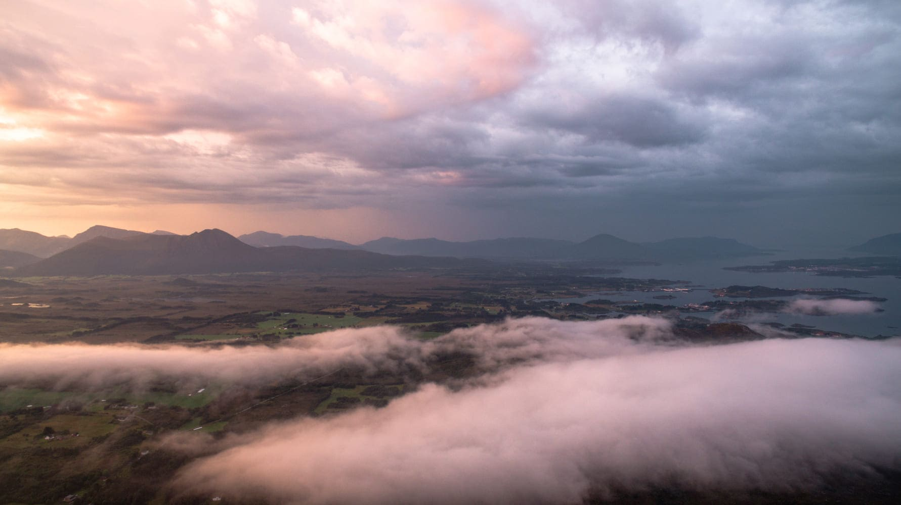
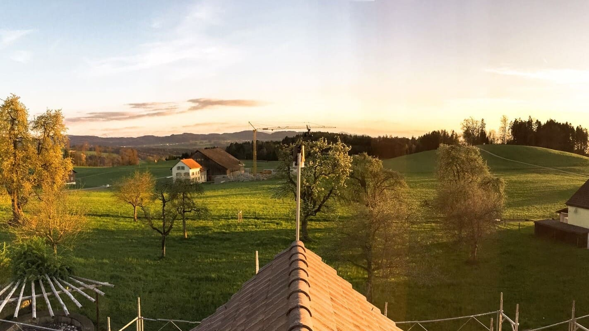
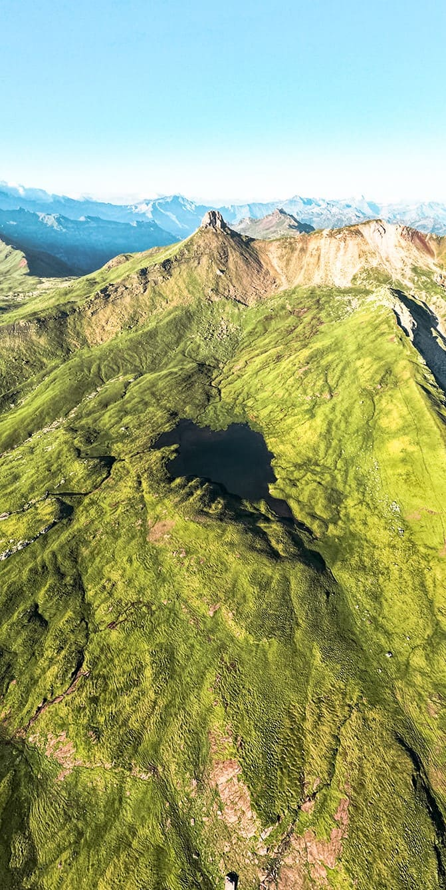
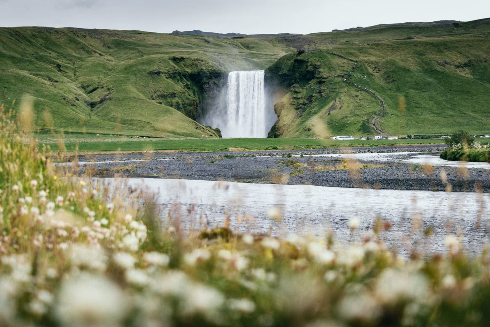
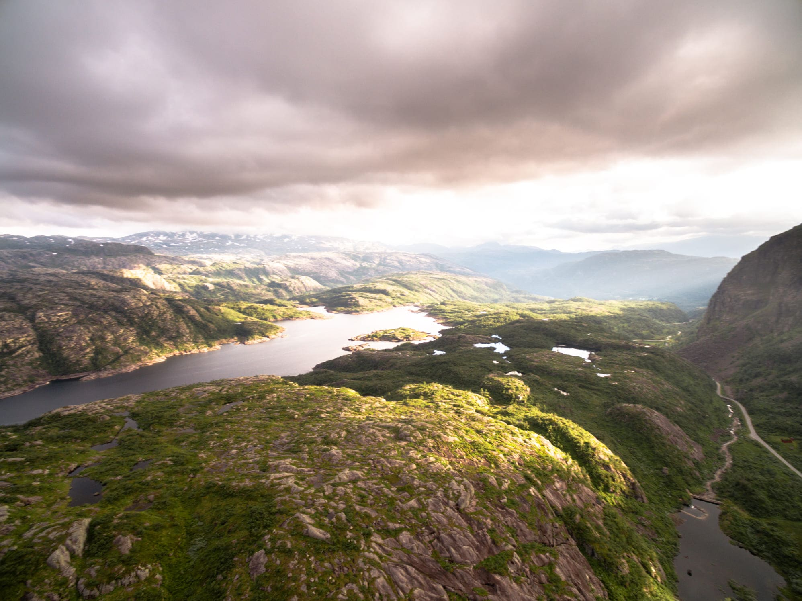
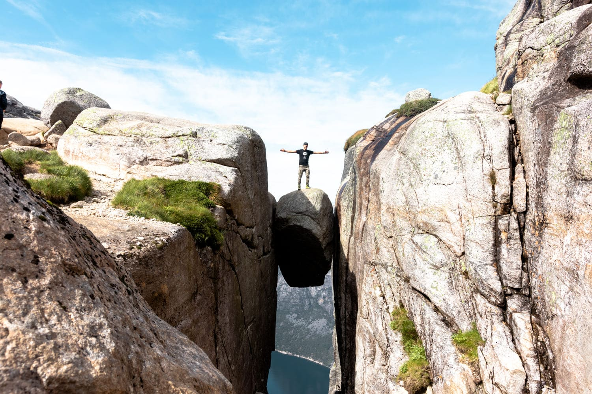
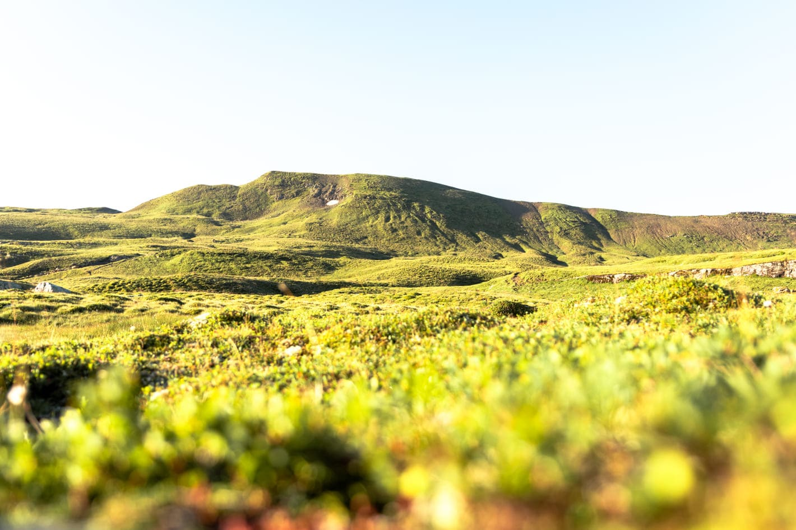
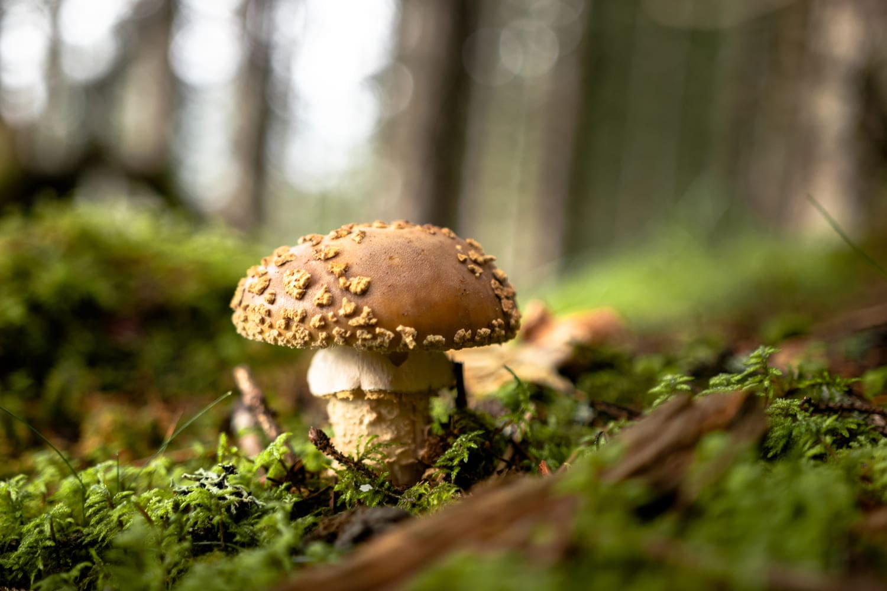

Leidenschaften: Atmosphäre, Natur & Technik
Seit meiner Kindheit bin ich fasziniert von der Dynamik der Atmosphäre und der Natur, welche ich fotografisch festhalte. Mit technischen Innovationen verbinde ich diese Leidenschaften zu spannenden Projekten.
Eine automatische Wetterstation auf 605 m Höhe, die kontinuierlich Wetterdaten erfasst und überwacht.
Zu den Wetterdaten
Eine Auswahl meiner schönsten Fotografien






Eine Zeitleiste meiner spannendsten Projekte und Beiträge
Mein erster Blogbeitrag zur Planung, Montage und Inbetriebnahme der Wetterstation.
Zum BlogbeitragIch bin von Natur aus neugierig und liebe es, neue Technologien zu erkunden. Die Kombination aus Meteorologie, Fotografie und Softwareentwicklung ermöglicht mir, meine Kreativität und mein technisches Verständnis vollständig auszuschöpfen.